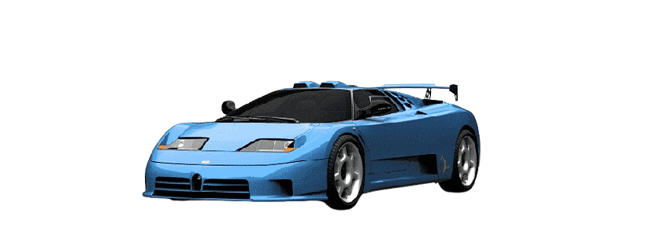
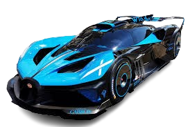
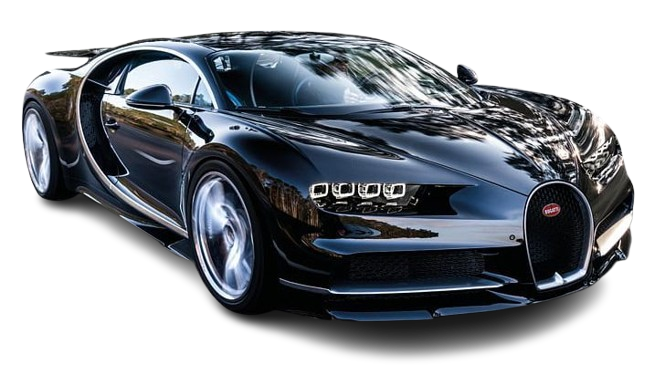
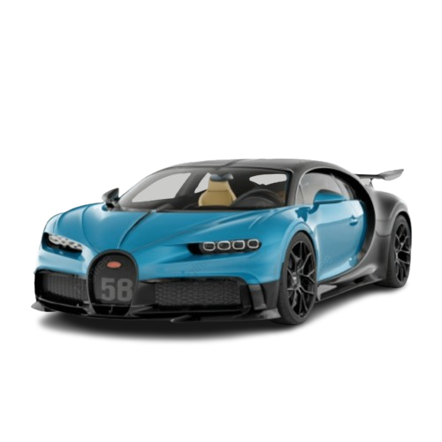
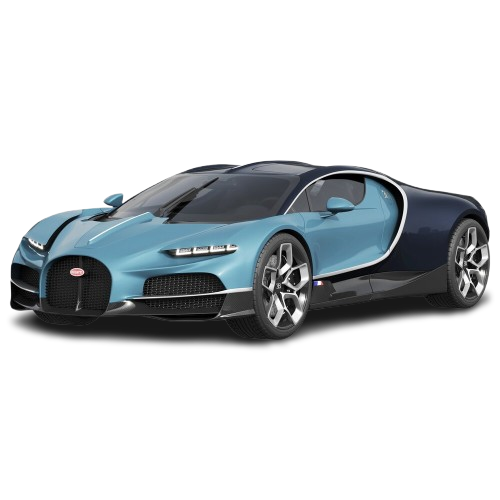
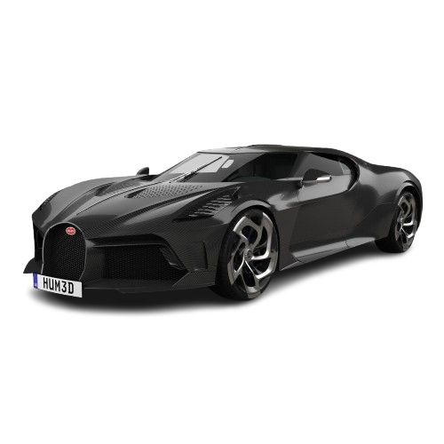

O Bugatti EB 110 é um supercarro icônico produzido pela Bugatti Automobili S.p.A. no início dos anos 1990. Ele foi criado para celebrar o 110º aniversário de Ettore Bugatti, fundador da marca, e trouxe de volta a Bugatti ao cenário automotivo de alto desempenho após décadas de inatividade.


< Carros zikas >



